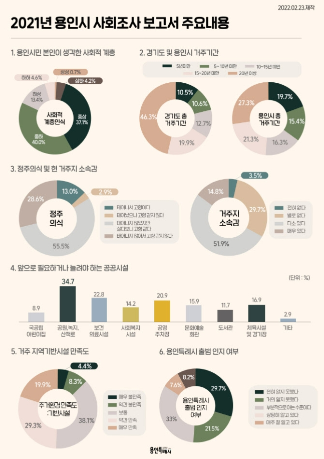

용인특례시 출범, 시민인지도 절반이상 낮아...“적극홍보 필요”
용인시민 절반 이상이 ‘용인 특례시 출범’에 대해 제대로 파악하지 못하는 것으로 나타났다.
24일 용인시에 따르면 지역내 1590가구 만15세 이상 가구원을 대상으로 진행한 ‘2021년 용인시 사회조사 보고서’에서 용인 특례시 출범 인지 여부 질의에서 부분적으로 아는 수준 33%, 전혀 알지 못한다는 수준이 29.7%에 달했다.
특례시 출범 이후 가장 변화가 필요한 분야로는 31.8%가 ‘지역경제 활성화 및 일자리 창출’을 꼽았다. 이어 ‘체계적인 도시개발 17.2%, ‘교통체계 정비 및 주차공간 확충’ 15.1% 순이었다.
본인의 소득, 직업, 재산 등을 고려한 사회경제적 지위가 어떤 계층에 속하는지 여부를 ‘하하’에서 ‘상상’까지 6개 계층으로 나눠 확인한 결과 ‘중하’가 40.4%로 가장 높게 나타났고 ‘중상’이 37.1% 로 뒤를 이었다.
82%의 시민이 자신의 사회적 계층을 ‘중층’ 이상이라고 생각하고 있었다. ‘상층’ 이상을 선택한 비율은 4.9%, ‘하층’ 이하라고 답한 비율은 18%로 조사됐다.
시민 48.7%는 현 거주지에서 15년 이상 거주했으며 16.3%가 10년 이상 15년 미만, 15.4%가 5년 이상 10년 미만 동안 거주한 것으로 나타났다.
현 거주지에 대한 정주의식을 묻는 항목에선 타 지역 출신을 포함해 68.5%가 용인을 고향으로 생각하고 있으며, 66.7%는 거주지에 대한 소속감을 느끼는 것으로 조사됐다.
10년 후에도 이 지역에 거주할 것인지를 묻는 항목에선 (대해선) 54.5%가 ‘그럴 것(어느정도 또는 매우)’이라고 답했다. ‘그렇지 않다’고 대답한 사람은 15.8%에 불과해 지역에 대한 만족도가 높은 것으로 분석됐다.
시민들이 향후 늘어났으면 좋겠다고 생각하는 공공시설은 공원·녹지·산책로가 34.7%로 가장 높았다. 보건의료시설이 22.8%로 그 뒤를 이었다.
공원·녹지·산책로가 필요하다는 응답 비율은 지난 2017년 31.1%보다 3.6% 증가했으며 보건의료시설 응답 비율은 지난 2017년 29.3%보다 6.5% 감소한 것으로 나타났다.
시 관계자는 “시민들의 사회적 관심사와 요구 사항을 파악해 정책의 기본 방향을 정하고 각종 사업 추진할 때 기초자료로 활용하기 위해 사회조사를 실시했다”고 말했다.
원본기사